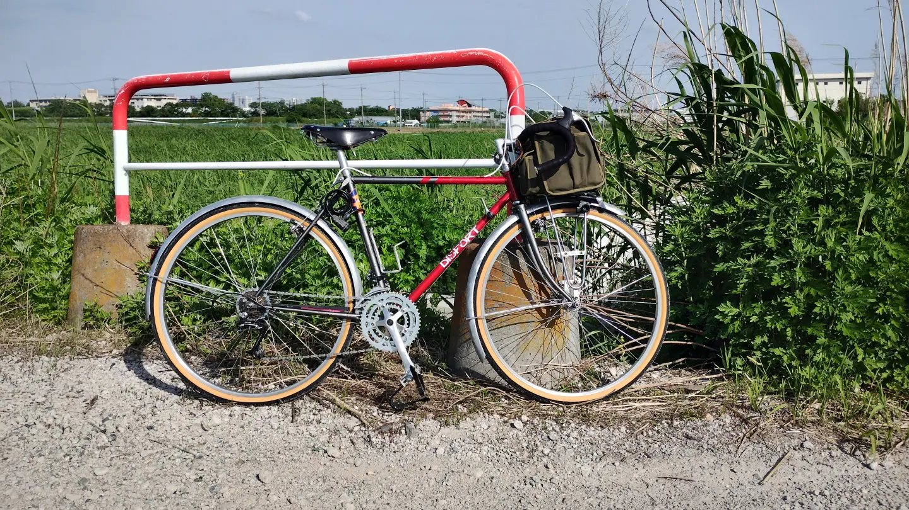

自転車（現在所有）
スクラの歴代の自転車を紹介
GIANT XtC840 2002年モデル

2003年、初めて買った（買ってもらった）スポーツ車。GIANTのありふれたMTBである。2003年には、まだ日本においてGIANTはマイナーで、初めて聞くブランドだった。人生でもっとも長い距離を乗った自転車。大学のサイクリングクラブでツーリングに使い倒した。2006年にフロントフォークをサスからVIVAのメッキリジッドフォークに換装、高田馬場モンキーに依頼してフロントキャリア（日東MTキャンピー）用ダボ穴を増設。その後街乗り仕様に改装。
上海鳳凰自転車 ZA42型改

中国 上海鳳凰自転車のロッドブレーキ自転車。2024年7月に淘宝にて購入。本体約18,000円、送料2万円。中国でこのようなロードスター型ロッドブレーキ自転車が作り続けられていることに興味を持ち購入したが、現行の製品は、メーカー側がもはややる気がないためあまり品質がよくないことがわかった。いじり倒しており、フロントハブはシマノ デュラエースのトラック用ハブ、リアはリムブレーキから唐沢のサーボブレーキに換装。フリーはWhite Industriesに交換。前後ホイールとも自分で手組みしなおした。2025年8～9月、4泊5日で東京～大阪ツーリング。
この自転車の紹介動画はこちら
- YouTube
https://www.youtube.com/watch?v=rGMwQJvCNcQ - bilibili
https://www.bilibili.com/video/BV1uxkHY9EGU/
東京～大阪ツーリングの動画はこちら
- YouTube
https://www.youtube.com/playlist?list=PLp0EoiAYq7WnszSLdvMT0Ppdw1ELLOqCz - bilibili
https://space.bilibili.com/2004161392/lists/6319384
Disport ランドナー
和歌山県和歌山市にあったヨシダサイクルのショップブランドのランドナー。行きつけの自転車店でボロボロの状態で中古購入、レストア。ワンオーナー品で、前の持ち主は自転車旅行で使い倒していたらしい。サンツアーX-1というMTB用パーツが使われており、1991年頃のものだと思われる。エンド126mm、リア6sボスフリー。正直、ダイアコンペのカンチブレーキが効かなすぎて乗るのがキツかったが、カンチブレーキの調整と、シューをASHIMAの舟別体型に交換したらマシになった。
天津飞鸽 PA22型


中国現地のコレクターから売ってもらった、1983年頃製造の天津飞鸽自転車。基本的には当時のオリジナルパーツのまま整備したが、タイヤは現代のものに交換。またブレーキシューも日本製がついている。ライトも現代のもの。
現代の中国製ロッドブレーキ自転車は出来が悪いことを知り、「本当の中国製自転車」を知りたく思い購入。しかし、現地コレクターによると「さらによい自転車」があるようなのでまだまだ中国自転車趣味は終わらなそうだ。
この自転車の紹介動画はこちら
- YouTube
https://www.youtube.com/watch?v=y5loucZB_Fc - bilibili
https://www.bilibili.com/video/BV17CqQBvE6k/
自転車（過去所有）
手放してしまった自転車を紹介
FELT Z95 年式不明
2019年頃に知人から中古購入したロードバイク。何回かツーリングに行ったが、自転車から心が離れていたので2022年くらいに手放してしまった。
パナチタン ロードバイク
2007年にPanasonicのPOSオーダーしたチタンロードバイク。型番は忘れた。当時、フレーム価格で10万円しなかった。パーツは次に紹介するBridgestone RADACから奪って旧105（1055系）で組み立てて、その後徐々に6600アルテなどに入れ替えていった。それなりに乗ったが、フレームはチタンだがフォークがカーボンなのが微妙だったのと、きちんとサイズを測ってオーダーしたがいまいちハンドルが遠い感じがして乗りにくかったので次第に乗らなくなってしまった。2011年くらいに、金欠だったので大学時代のサイクリングクラブの先輩に売却。いまとなってはPOSは非常に高価になってしまったので、もしクロモリでオーダーしていたら末永く乗っていたのではないかということが惜しまれる。
ブリヂストン レイダック ロードレーサー

2004年に地元のリサイクルショップで1万円で買った、Bridgestone RADACのロードレーサー。おそらく1990年前後のもの。次に紹介するピンクのロードレーサーがエンド幅126mmでリア7段しかないのが気に入らなかったので購入した。コンポは1055系105。STIレバーのラチェットが死んでいたが、分解注油で復活した。当時、1990年代前半のデザインがいちばんダサい時代だったので、もともと貼られていたデカールを剥がして乗っていた。高校時代は最初に買ったGIANTのMTBよりもロードのほうが多く乗っていた。もしかするとその後もメインの自転車になった可能性もあったのだが、大学入学後に入ったサイクリングクラブがキャンプツーリング主体だったので、GIANT XtC840に主役の座を奪い返されてしまった。最終的に2007年、上記のパナチタンにパーツを奪われてフレームはヤフオクで売却されてしまった。
無銘 ピンクのロードレーサー
2003年、地元のリサイクルショップで購入。無銘、エンド幅126mm。最初はWレバー仕様だったが、Shimano SORAの7速用STIレバーを買って手元変速化。写真のように、同級生の付き合いでこんなのに乗って群馬サイクルスポーツセンターのレースに出場したことがある。スネ毛さえ剃っていない。いまとなってはこれも日本製の良い自転車なのだが、当時は一番価値が低い時代だったので、上記のブリヂストン レイダック購入後はほとんど乗らなくなった。2007年頃、地元で転倒してホイールを歪ませてしまい、修復せずヤフオクで安値で売却。